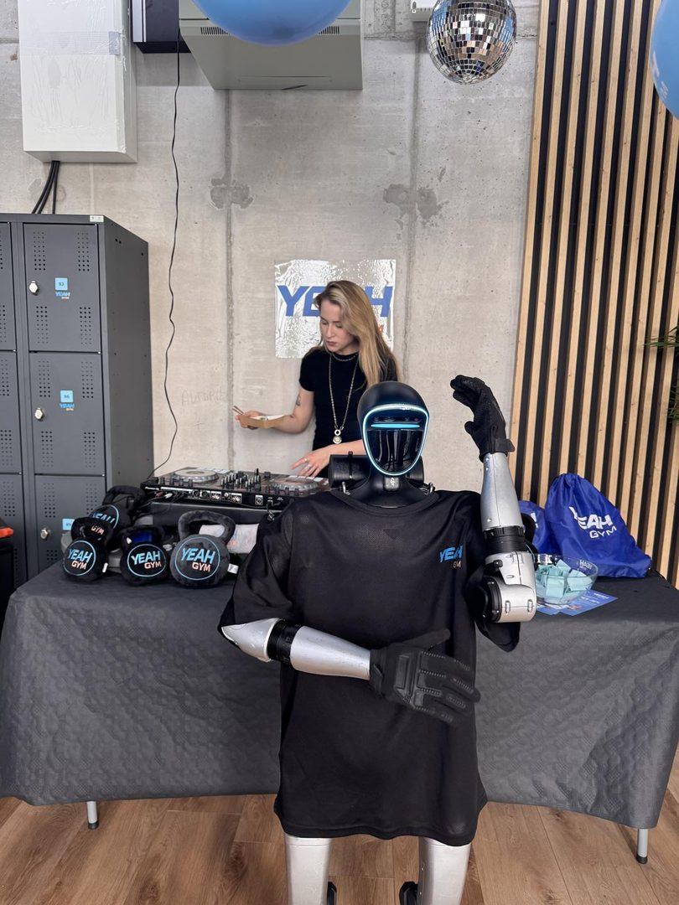
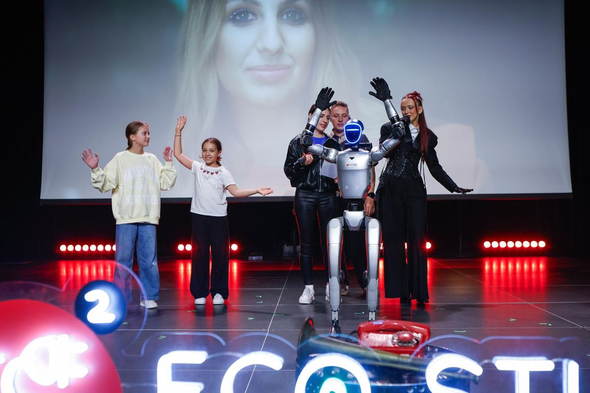

- Strona główna
- Blog
- Integracja firmowa — pomysły
Przewodnik eventowy · Firmy
Integracja firmowa: co to jest, 30 pomysłów na integrację, koszty i podatki
„Integracja firmowa co to” i „integracja firmowa a VAT” to dwa najczęściej wpisywane w wyszukiwarkę pytania o ten temat — ważniejsze dla ludzi niż same pomysły. Odpowiadamy na oba, a potem dajemy 30 pomysłów na integrację w biurze, w terenie i na wyjeździe, z cenami z publicznych źródeł i przykładową agendą.

Integracja firmowa bywa mylona z imprezą firmową, a to dwa różne wydarzenia. Impreza jest nagrodą: dobre jedzenie, muzyka, atrakcje. Integracja ma coś zmienić w zespole: ludzie, którzy piszą do siebie maile, mają zacząć ze sobą rozmawiać. Ten poradnik zaczyna od definicji i podatków, bo o to pytacie najczęściej, a potem daje 30 pomysłów uporządkowanych według formy i miejsca, z cenami z publicznych źródeł (stan: październik 2026).
Integracja firmowa: co to jest i po co
Integracja firmowa to spotkanie lub wyjazd pracowników organizowany przez pracodawcę, którego celem jest poprawa współpracy: poznanie się, zbudowanie zaufania, przełamanie podziałów między działami, zwykle przy okazji odpoczynku. Po angielsku mówi się team building (na zadania zespołowe), offsite (na wyjazd poza biuro) albo company retreat (na dłuższy wyjazd).
Dobra integracja ma trzy cechy. Po pierwsze, wszyscy biorą udział w tym samym — nie ma sceny i widowni. Po drugie, zadania wymagają współpracy, nie tylko rywalizacji. Po trzecie, jest czas na rozmowy bez programu, bo tam dzieje się najwięcej. Pokazy i atrakcje „do oglądania” są dodatkiem; jeśli szukasz ich listy, przejdź do poradnika atrakcje na imprezę firmową.
Cztery formy integracji firmowej
- W biurze, 2–3 godziny. Warsztat, quiz, gry, catering. Najtańsza i najłatwiejsza do zorganizowania; dobra na kwartalne spotkania zespołu.
- Jednodniowa poza biurem. Popołudnie aktywności (teren, gokarty, escape room) i wspólna kolacja. Najczęstszy format dla 20–100 osób.
- Wyjazd z noclegiem. Hotel lub ośrodek, dzień warsztatów i aktywności, wieczór z programem, śniadanie. Najmocniejszy efekt, najwyższy koszt na osobę.
- Online. Dla zespołów rozproszonych: quiz, warsztat prowadzony na żywo, paczki wysłane do domu. Działa na 60–90 minut, nie dłużej.
Pomysły na integrację: warsztaty (1–8)
- Warsztat kulinarny. Zespoły gotują menu pod okiem szefa kuchni, potem wspólna kolacja z tego, co powstało. Działa na każdą grupę i każdy wiek.
- Warsztat koktajlowy. Barman uczy trzech–czterech drinków, zespoły tworzą własny „firmowy” koktajl. Barman mobilny kosztuje według cenników średnio 1 806 zł (cenauslug.pl, 2026).
- Improwizacja teatralna. Ćwiczenia z impro uczą słuchania i reagowania — to najtańszy warsztat z komunikacji, jaki istnieje, i jeden z najzabawniejszych.
- Bębny i rytm. Cała grupa gra razem na bębnach prowadzona przez instruktora. Dobre na 100+ osób, bo skaluje się bez limitu.
- Ceramika, świece, sitodruk. Każdy wychodzi z własnym przedmiotem. Spokojniejsza forma dla zespołów, które nie lubią rywalizacji.
- Pierwsza pomoc. Szkolenie z fantomami i scenkami — integruje i zostaje w głowach na lata. Część firm łączy je z obowiązkowymi szkoleniami.
- Warsztat budowania. Zespoły budują z kartonu pojazd, most albo maszynę według zadania, potem testy i prezentacje. Klasyka team buildingu, działa od 10 do 300 osób.
- Warsztat z robotem humanoidalnym. Zespoły przygotowują dla robota zestaw pytań, scenariusz powitania albo układ gestów; robot wykonuje zadania na oczach wszystkich. Nowość, której nikt z zespołu jeszcze nie robił. Oferta: robot na team building.
Sport i teren (9–16)
- Gra terenowa. Zadania w mieście lub w lesie, mapa, aplikacja albo koperty, punkty za czas i kreatywność. Najpopularniejszy format wyjazdów; da się go przygotować własnymi siłami.
- Paintball lub laser tag. Rywalizacja, adrenalina, drużyny mieszane między działami. Laser tag jest bezbolesny i działa też w hali.
- Spływ kajakowy. Kilka godzin na rzece, dwuosobowe kajaki (najlepiej z osobą z innego działu), grill na koniec. Sezon: maj–wrzesień.
- Rajd rowerowy lub nordic walking. Trasa 15–30 km z punktami zadań, dla grup w różnej formie — tempo dyktuje najwolniejszy.
- Park linowy, wspinaczka. Wyzwanie dla jednostek, wsparcie od grupy. Dobre dla młodszych zespołów.
- Regaty lub żeglowanie. Mazury, Zatoka Gdańska, jezioro pod miastem. Załoga musi współpracować, żeby łódź płynęła — team building bez trenera.
- Olimpiada firmowa. Kilka konkurencji sportowych i zręcznościowych, tabela wyników, medale. W plenerze latem, w hali zimą.
- Survival i bushcraft. Rozpalanie ognia, budowa schronienia, orientacja w terenie. Jeden dzień, instruktor, las.
Gry i rywalizacja (17–23)
- Quiz drużynowy. Pytania o firmę, branżę i popkulturę, prowadzący, nagrody. Najtańsza integracja z tej listy.
- Escape room. Kilka pokoi równolegle, porównanie czasów przy kolacji. Na 20–40 osób.
- Turniej e-sportowy. Konsole, drużyny, komentator. Dla zespołów, które wolą ekran od boiska.
- Wieczór kasyna. Ruletka, blackjack, poker na żetony, 1 400–2 500 zł za 3–5 godzin z krupierami (cenauslug.pl, 2026). Rywalizacja bez ryzyka.
- Gokarty. Kwalifikacje, wyścig, podium. Krótki, intensywny format na 2 godziny.
- Kręgle lub bilard. Wynajęte tory, drużyny działów, jedzenie na miejscu. Działa zimą i dla osób, które nie chcą się przebierać.
- Teleturniej firmowy. Format znany z telewizji z ekranem, przyciskami i prowadzącym. Ogląda cała sala, gra kilka drużyn.
Kreatywne i społeczne (24–27)
- Wspólny mural. Każdy zespół maluje fragment obrazu według szablonu; całość wisi potem w biurze.
- Film firmowy w zespołach. Drużyny kręcą telefonami 2-minutowe filmy na zadany temat, wieczorem pokaz i nagrody.
- Integracja z celem społecznym. Zespoły składają rowery, pakują paczki lub budują budki dla ptaków, które trafiają do organizacji społecznej. Integruje i daje poczucie sensu.
- Warsztat fotograficzny. Zadania fotograficzne w mieście, wystawa zdjęć na kolacji. Tanie, bo sprzętem jest telefon.
Integracja wyjazdowa: nad morzem, w górach, na Mazurach (28–30)
- Nad morzem. Poza sezonem (wrzesień–październik, kwiecień–maj) hotele nad Bałtykiem mają wolne terminy i niższe ceny. Program: plaża, gra terenowa w kurorcie, kolacja z owocami morza. Przy niepogodzie — SPA i warsztaty w hotelu.
- W górach. Wędrówka z przewodnikiem, zjazd na sankach lub rowerach, wieczór przy ognisku z kapelą. Wymaga planu na pogodę i uwzględnienia kondycji grupy.
- Na Mazurach lub nad jeziorem. Żeglowanie, kajaki, ognisko, sauna. Blisko dla firm z Warszawy i północnej Polski.


Ile kosztuje integracja firmowa
Publicznych cenników integracji jest niewiele, bo każda jest inna. To, co da się znaleźć (stan: październik 2026):
| Pozycja | Cena | Źródło |
|---|---|---|
| Kompleksowa organizacja wyjazdu integracyjnego (program, koordynacja; bez noclegów i wyżywienia) | średnio 17 774 zł netto; 12 874–22 674 zł | Oferteo, 2026 |
| Catering imprezy firmowej, 50 osób | średnio 220 zł/os.; kelner 60–100 zł/h | cenauslug.pl, 2026 |
| Prostsze menu: dwa dania ciepłe i przekąski | 80–150 zł/os. | kb.pl, 2026 |
| Barman mobilny / warsztat koktajlowy | średnio 1 806 zł | cenauslug.pl, 2026 |
| Mobilne kasyno, 3–5 h | 1 400–2 500 zł | cenauslug.pl, 2026 |
| Skromny wyjazd integracyjny na osobę | 200–300 zł/os. (dane sprzed kilku lat — dziś raczej więcej) | money.pl, ok. 2022 |
| Robot humanoidalny 33bots | od 5 500 zł netto za dzień; krótsze wejście taniej; operator, transport, branding w cenie | nasz cennik, 2026 |
Orientacyjnie: integracja w biurze z warsztatem i cateringiem to 100–250 zł na osobę. Jednodniowa poza biurem z aktywnością i kolacją — 250–500 zł. Wyjazd z noclegiem — od kilkuset złotych na osobę w górę, zależnie od hotelu i sezonu. Hotele, parki rozrywki i tory gokartowe wyceniają grupy indywidualnie; proś o ofertę z rozbiciem na osobę.
Integracja firmowa a VAT, koszty i przychód pracownika
Zasady ogólne, które warto znać przed rozmową z księgową (interpretacje organów podatkowych zmieniają się, więc potwierdź je przed rozliczeniem):
- Koszty uzyskania przychodu. Wydatki na integrację pracowników co do zasady mogą być kosztem, jeśli spotkanie ma cel integracyjny i jest udokumentowane (program, lista uczestników, faktury). Część dla kontrahentów to reprezentacja — nie jest kosztem. Alkohol organy często kwestionują.
- VAT. Od usług gastronomicznych i noclegowych odliczenie nie przysługuje. Od wynajmu sali, warsztatów, atrakcji i transportu — co do zasady tak, przy związku z działalnością opodatkowaną. Catering dowożony jest traktowany w części interpretacji inaczej niż restauracja.
- Przychód pracownika. Po wyroku Trybunału Konstytucyjnego z 8 lipca 2014 roku (K 7/13) udział w imprezie integracyjnej nie jest przychodem pracownika, bo nie da się przypisać mu konkretnej korzyści. Inaczej z nagrodami rzeczowymi i prezentami.
- Dokumentacja. Zaproszenie z celem spotkania, program, lista obecności, faktury VAT z opisem. To one decydują w razie kontroli, nie nazwa imprezy.
Przykładowa agenda integracji jednodniowej
| Godzina | Blok | Uwagi |
|---|---|---|
| 13:00 | przyjazd, kawa, podział na drużyny mieszane | losowanie, nie „po działach” |
| 13:30–15:30 | aktywność główna: gra terenowa, warsztat budowania, olimpiada | jedna, nie trzy |
| 15:30–16:00 | przerwa, przekąski | czas na rozmowy |
| 16:00–17:30 | warsztat lub zadanie kreatywne (film, mural, robot) | wynik do pokazania wieczorem |
| 18:00–19:00 | podsumowanie: prezentacje drużyn, nagrody | krótko, z humorem |
| 19:00–23:00 | kolacja, muzyka, luźna część | bez programu — tu dzieje się integracja |
Zabawy integracyjne dla pracowników na 10–20 minut
- Dwie prawdy i jedno kłamstwo. Każdy mówi trzy zdania o sobie, reszta zgaduje, które jest nieprawdziwe.
- Wieża z makaronu. Drużyny budują najwyższą wieżę ze spaghetti, taśmy i sznurka, z pianką na szczycie. 18 minut.
- Bingo firmowe. Karta z hasłami („ktoś, kto ma psa”, „ktoś z innego miasta”), trzeba zebrać podpisy.
- Speed networking. Dwie minuty rozmowy z osobą z innego działu, zmiana, dziesięć rund.
- Co mamy wspólnego. Drużyna w 5 minut znajduje pięć rzeczy, które łączą wszystkich jej członków.
- Rysuj i zgaduj. Hasła z firmowego słownika rysowane na tablicy.
- Wyzwanie fotograficzne. Lista dziesięciu zdjęć do zrobienia w 20 minut, pokaz na ekranie.
- Pytania do robota. Jeśli na integracji jest robot humanoidalny: drużyny układają pytania, robot odpowiada na scenie, sala ocenia, które pytanie było najlepsze.
Robot humanoidalny na integracji firmowej
Robot humanoidalny Unitree G1 pracuje na integracji w dwóch rolach. Jako atrakcja wita uczestników, podaje rękę, rozmawia po polsku i w innych językach, pozuje do zdjęć w koszulce z logo firmy i tańczy — zespół dostaje wspólne przeżycie i temat, który zostaje na długo. Jako zadanie: drużyny przygotowują dla robota pytania, scenariusz albo gesty, a on wykonuje je na oczach wszystkich. Przed wydarzeniem wgrywamy mu wiedzę o firmie, więc odpowiada na pytania o Wasze projekty.
Pełny dzień od 5 500 zł netto, krótsze wejście wyceniamy indywidualnie i taniej. W cenie operator, transport w całej Polsce (także do hotelu w górach), branding i ubezpieczenie OC. Bez zaliczki, faktura po wydarzeniu. Oferta: robot na integrację firmową.
Najczęstsze pytania
To spotkanie lub wyjazd pracowników organizowany przez firmę po to, żeby ludzie lepiej się poznali i łatwiej współpracowali: warsztaty, gry zespołowe, aktywność w terenie, wspólna kolacja. Po angielsku: team building, offsite, company retreat. Od imprezy firmowej różni się celem — integracja ma coś zmienić w zespole, impreza ma być nagrodą.
Od usług gastronomicznych i noclegowych VAT nie podlega odliczeniu. Od innych usług związanych z integracją pracowników (wynajem sali, warsztaty, atrakcje, transport) odliczenie jest co do zasady możliwe, jeśli wydatek ma związek z działalnością opodatkowaną, a impreza ma cel integracyjny. Przy cateringu dowożonym część interpretacji dopuszcza odliczenie, przy restauracji nie. Potwierdź z księgowym — interpretacje się zmieniają.
Kompleksowa organizacja wyjazdu integracyjnego kosztuje według Oferteo średnio 17 774 zł netto (12 874–22 674 zł) za wydarzenie, bez noclegów i wyżywienia. Catering imprezy firmowej to średnio 220 zł od osoby (cenauslug.pl, 2026). Integracja w biurze z jednym warsztatem i cateringiem zamyka się zwykle w 100–250 zł na osobę; wyjazd z noclegiem to kilkaset złotych na osobę i więcej.
Quiz drużynowy, warsztat koktajlowy lub kulinarny z cateringiem, bingo firmowe, turniej gier planszowych lub konsolowych, warsztat improwizacji, wspólny mural, speed networking między działami. Dwie–trzy godziny po pracy, bez wyjazdu i bez sali — najtańsza forma integracji.
Tak, w dwóch rolach. Jako atrakcja: wita, rozmawia, pozuje do zdjęć, tańczy — daje zespołowi wspólne przeżycie i temat. Jako zadanie: drużyny przygotowują dla robota pytania, scenariusz albo choreografię, a on je wykonuje. Pełny dzień od 5 500 zł netto, krótsze wejście taniej; operator, transport i branding w cenie.